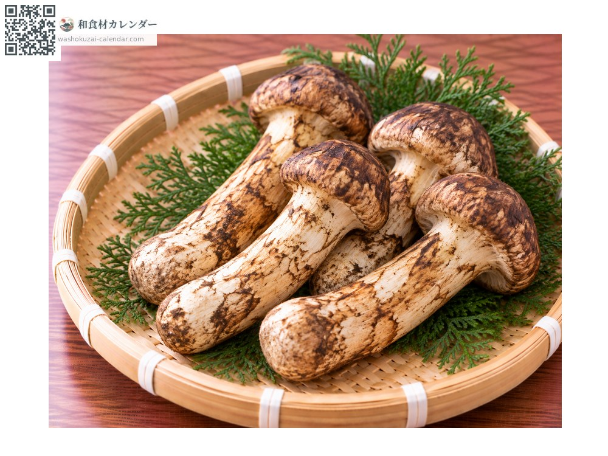
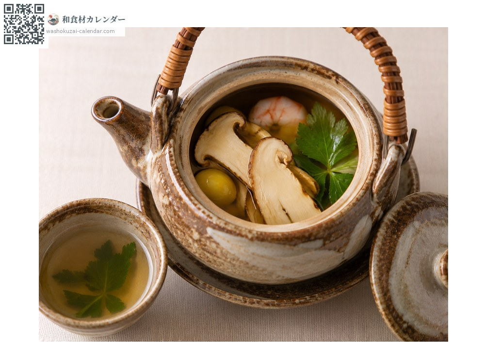
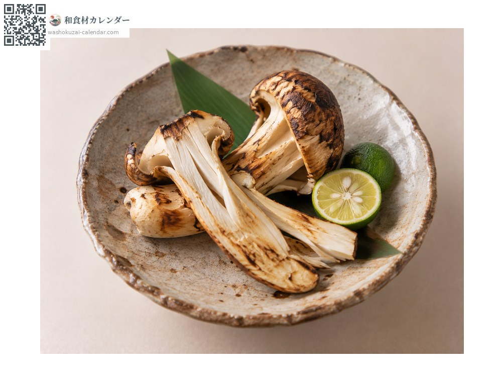
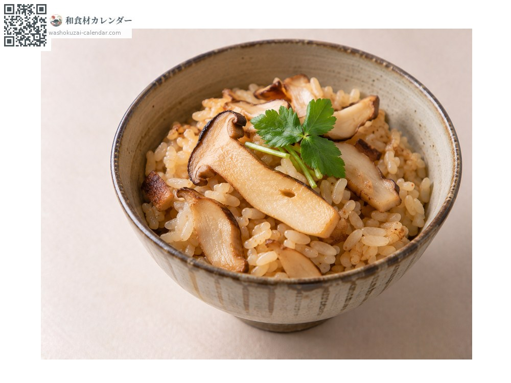
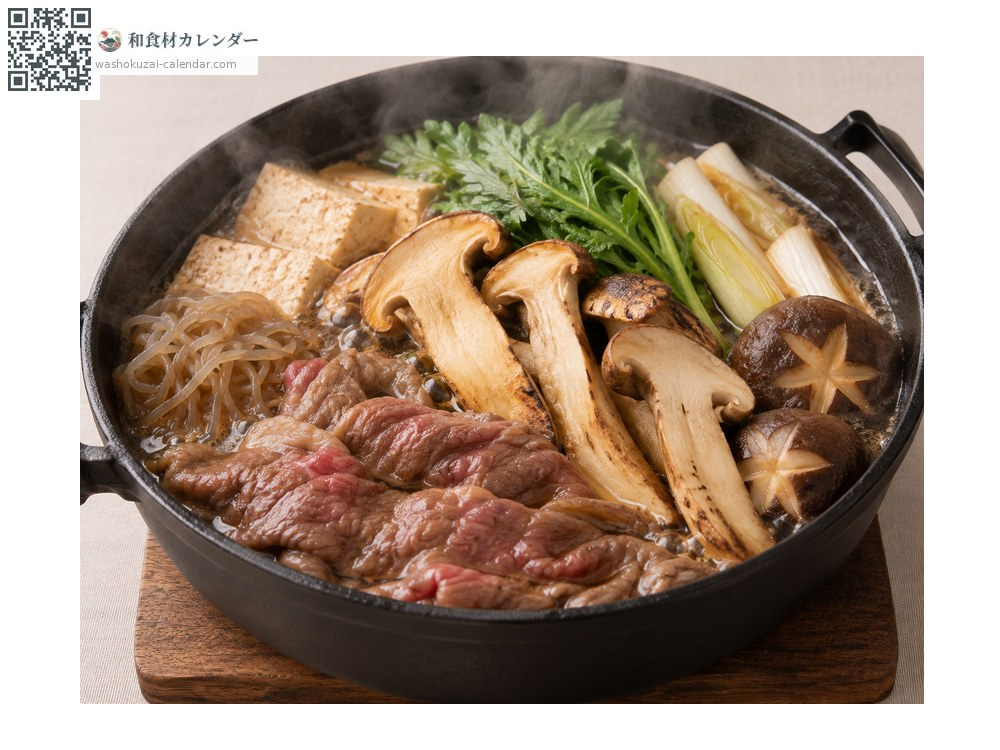

蔬菜
松茸
マツタケ まつたけ matsutake
別名matsutake
當令時期為9月、10月

當令時期
1月
2月
3月
4月
5月
6月
7月
8月
9月
10月
11月
12月
當令有供應
料理方式

土瓶蒸
把香氣封在土瓶裡。

炭烤松茸佐酸橘
撕開後燒烤，擠上酸橘。

松茸炊飯
與米一同炊煮。

壽喜燒
切薄片加進壽喜燒。
挑選方式
柄粗而短、傘尚未完全張開、香氣強。
保存方式
不要清洗。用沾濕的報紙包好冷藏。香氣容易散失，要盡早使用。
主要產地
小知識
無法人工栽培，只有天然的。日本產量銳減，市面上大多是進口品。